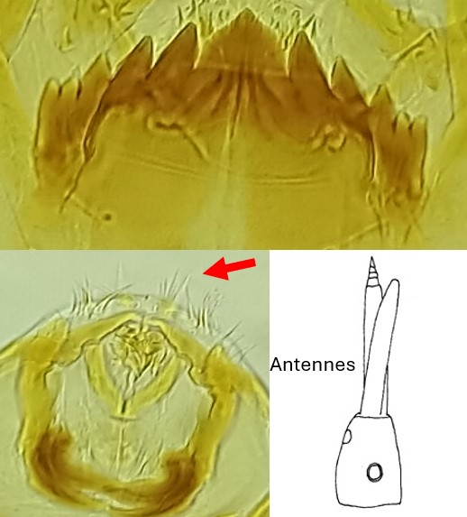
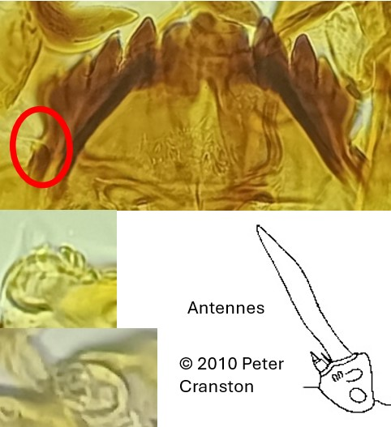

Sous famille des Orthocladiinae
Dent médiane porte un « mamelon »


Mentum avec 5 dents latérales, SI plumeuses
Antennes moyennes/longues (Segment 1 aussi long que le segment basal ; segments terminaux réduits (2-3).) Lame (chète) antennaire bien développée mais pas aussi longue que le flagelle
Mentum avec 4 dents latérales (Si 5ème paire de dents latérales alors fusionnées à la 4ème). Base du
mentum avec une protubérance.
Antenne très petites (segment basal plus court que le 1er segment). Lame (chète) antennaire dépassant largement l’apex du flagelle